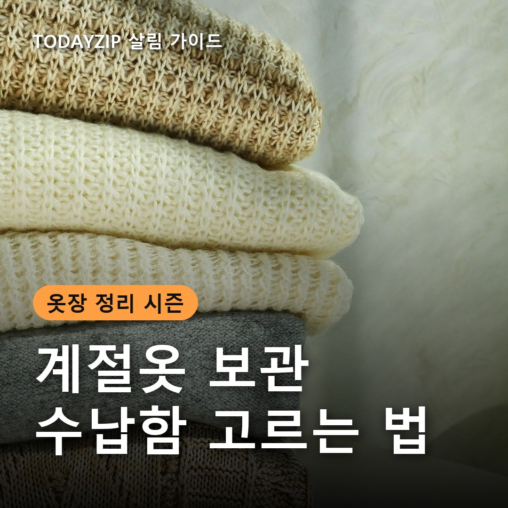
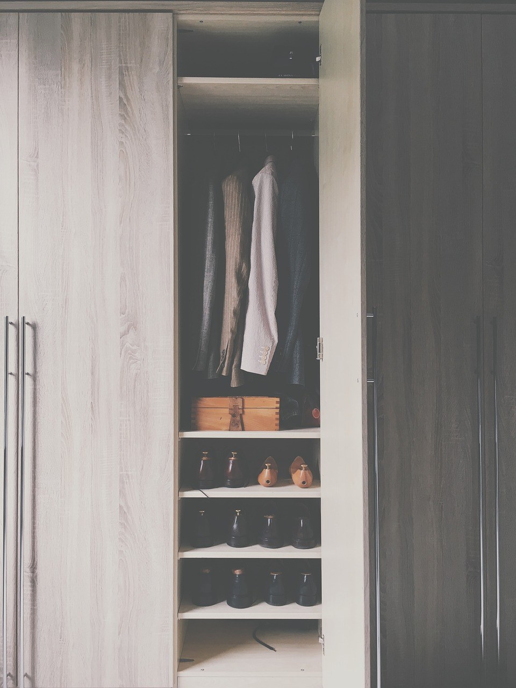
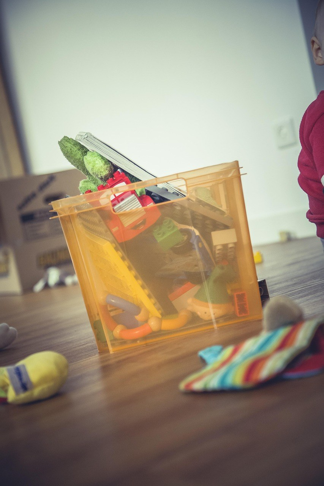
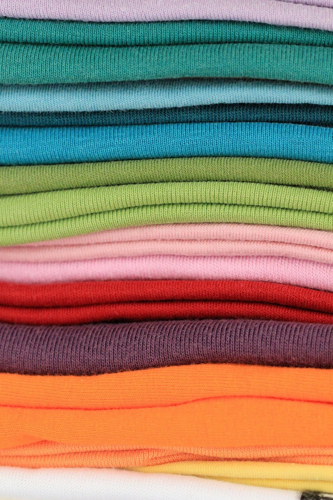
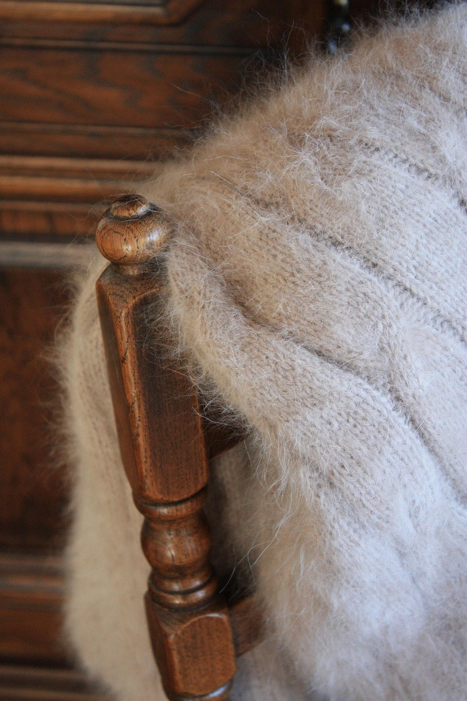

이 포스팅은 쿠팡 파트너스 활동의 일환으로, 이에 따른 일정액의 수수료를 제공받습니다.
[사진 1: 썸네일]
아침저녁으로 쌀쌀해지면 옷장 정리를 미룰 수가 없죠. 여름옷을 넣고 니트와 패딩을 꺼내려는데, 옷장은 이미 꽉 차 있고 수납함은 뭘 사야 할지 막막해요.
계절옷 보관은 어떤 옷을 어디에 넣느냐에 따라 결과가 달라져요. 오늘은 리빙박스, 압축팩, 부직포 수납함의 차이를 표로 비교하고, 옷 종류별로 맞는 수납함 고르는 법과 보관 전 체크리스트까지 정리해 드릴게요.
[사진 2]
옷을 몇 달 동안 넣어 두면 가장 큰 적은 습기와 눌림이에요. 공기가 안 통하는 곳에 습기가 갇히면 꿉꿉한 냄새나 얼룩이 생기기 쉽고, 오래 눌린 옷은 모양이 잘 돌아오지 않아요.
그래서 계절옷 보관은 '얼마나 많이 넣느냐'보다 '이 옷에 공기와 공간이 필요한가'를 먼저 따져야 실패가 줄어들어요.
세 가지 수납함의 특징을 표로 정리했어요. 한 가지로 통일하기보다 옷 종류에 따라 나눠 쓰는 게 좋아요.
| 구분 | 리빙박스 | 압축팩 | 부직포 수납함 |
|---|---|---|---|
| 소재 | 플라스틱(PP 등) | 비닐 + 밸브 | 통기되는 부직포 천 |
| 장점 | 튼튼하고 쌓기 좋음, 먼지 차단 | 부피를 크게 줄임 | 가볍고 공기가 통함, 접어서 보관 |
| 단점 | 습기가 갇히기 쉬움 | 충전재·니트가 눌림 | 형태가 무너지기 쉬움, 먼지 유입 |
| 잘 맞는 옷 | 티셔츠·면바지 등 잘 마른 옷 | 충전재 없는 점퍼, 얇은 면 옷 | 니트, 패딩, 이불 |
| 보관 위치 | 베란다 수납장, 옷장 아래 | 침대 밑, 좁은 틈새 | 옷장 위 칸, 선반 |
[사진 3]
리빙박스는 튼튼하고 여러 개를 쌓을 수 있어서 반팔 티셔츠, 면바지처럼 잘 구겨지지 않는 옷을 많이 넣기에 좋아요. 투명한 제품은 안에 든 옷이 보여 다시 꺼낼 때 편해요.
다만 뚜껑을 닫으면 공기가 거의 통하지 않아요. 옷을 완전히 말린 뒤 넣고, 제습제를 함께 넣어 두면 습기 걱정을 줄일 수 있어요.
[사진 4]
압축팩은 공기를 빼서 부피를 크게 줄여 줘요. 하지만 오래 압축하면 다운 충전재가 눌리고, 니트는 원래 모양으로 잘 돌아오지 않을 수 있어요. 가죽이나 털처럼 통풍이 필요한 소재도 밀봉하지 않는 게 좋아요.
충전재가 없는 바람막이나 얇은 면 실내복, 여분 침구 커버처럼 눌려도 괜찮은 것 위주로 쓰세요.
[사진 5]
부직포 수납함은 천처럼 공기가 통해서 니트, 패딩, 구스·오리털 이불처럼 숨 쉴 공간이 필요한 옷에 잘 맞아요. 꽉 채우기보다 살짝 여유 있게 넣어야 눌림이 덜해요.
먼지가 들어올 수 있으니 뚜껑이나 지퍼가 있는 제품을 고르고, 바닥보다는 선반이나 옷장 위 칸에 두는 게 좋아요.
어떤 수납함을 쓰든 넣기 전 준비가 반이에요. 아래 항목만 지켜도 내년에 꺼낼 때 훨씬 깨끗해요.
Q. 패딩은 압축팩에 넣으면 안 되나요?
A. 오래 압축하면 충전재가 눌려 복원이 잘 안 될 수 있어요. 옷걸이에 걸거나 부직포 수납함에 여유 있게 넣는 쪽이 안전해요. 꺼낸 뒤에는 하루 정도 펼쳐 두고 흔들어 주세요.
Q. 리빙박스에 니트를 넣어도 되나요?
A. 잘 말린 니트라면 넣을 수 있지만 꽉 채우면 눌림이 생겨요. 여유 있게 넣고 제습제를 함께 두세요. 가능하면 통기되는 부직포 수납함이 더 잘 맞아요.
정리하면, 잘 마른 면 옷은 리빙박스, 눌려도 괜찮은 얇은 옷은 압축팩, 니트·패딩·이불은 부직포 수납함이에요. 어떤 계절옷 보관 방법이든 세탁과 완전 건조가 먼저라는 것만 기억하세요.
여러분은 계절옷을 어떻게 보관하세요? 옷장 정리 꿀팁이 있다면 댓글로 나눠 주세요.
인스타그램 @todayzip.info 에서 살림 꿀팁을 30초 영상으로도 볼 수 있어요.
이 포스팅은 쿠팡 파트너스 활동의 일환으로, 이에 따른 일정액의 수수료를 제공받습니다.